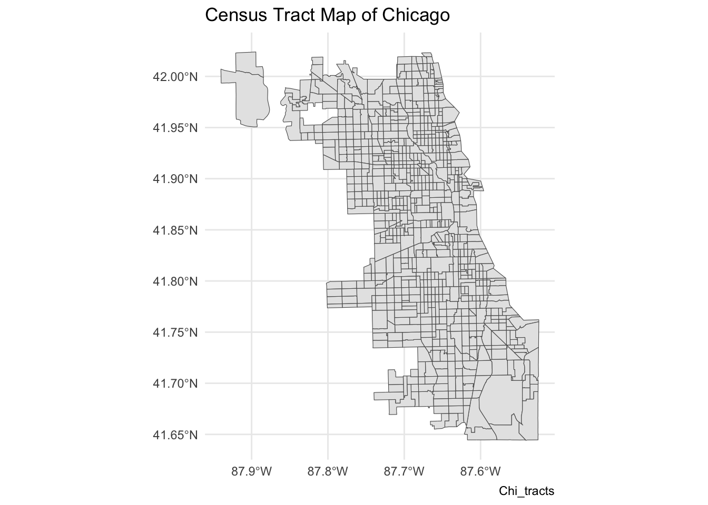

A Data Wrangling in R
In this part of our toolkit, we’re going to learn how to do the same things we did with Chapter 4 - Spatial Data Wrangling, but this time, we’ll use R code to handle our spatial data.
Objectives
In this module, you will:
- Practice basic operations of spatial data with R
- Convert CSV lat/long to spatial points and geocode address
- Overlay points with boundary data, merge SDOH data, visualize as choropleth
Getting Started
R is a great choice for starting in data science because it’s built for it. It’s not just a programming language, it is a whole system with tools and libraries made to help you think and work like a data scientist easily.
We assume a basic knowledge of R and coding languages for these toolkits. For most of the tutorials in this toolkit, you’ll need to have R and RStudio downloaded and installed on your system. You should be able to install packages, know how to find the address to a folder on your computer system, and have very basic familiarity with R.
Tutorials for R
If you are new to R, we recommend the following intro-level tutorials provided through installation guides. You can also refer to this R for Social Scientists tutorial developed by Data Carpentry for a refresher.
You can also visit the RStudio Education page to select a learning path tailored to your experience level (Beginners, Intermediates, Experts). They offer detailed instructions to learners at different stages of their R journey.
A.1 Environmental Setup
Getting started with data analysis in R involves a few preliminary steps, including downloading datasets and setting up a working directory. This introduction will guide you through these essential steps to ensure a smooth start to your data analysis journey in R.
Download the Activity Datasets
Please download and unzip this file to get started: SDOHPlace-DataWrangling.zip
Setting Up the Working Directory
Setting up a working directory in R is crucial as it defines the location on your computer where your files and scripts will be saved and accessed. You can set the working directory to any folder on your system where you plan to store your datasets and R scripts. To set your working directory, use the setwd("/path/to/your/directory") and specify the path to your desired directory.
Installing & Working with R Libraries
Before starting operations related to spatial data, we need to complete an environmental setup. This workshop requires several packages, which can be installed from CRAN:
sf: simplifies spatial data manipulationtmap: streamlines thematic map creationdplyr: facilitates data manipulationggplot2: enables advanced data visualizationtidygeocoder: converts addresses to coordinates easily
Installation Tip
For Mac users, check out https://github.com/r-spatial/sf for additional tips if you run into errors when installing the sf package. Using homebrew to install gdal usually fixes any remaining issues.
Now, loading the required libraries for further steps:
## Linking to GEOS 3.11.0, GDAL 3.5.3, PROJ 9.1.0; sf_use_s2() is TRUE##
## Attaching package: 'dplyr'## The following objects are masked from 'package:stats':
##
## filter, lag## The following objects are masked from 'package:base':
##
## intersect, setdiff, setequal, unionA.2 Intro to Spatial Data
Spatial data analysis in R provides a robust framework for understanding geographical information, enabling users to explore, visualize, and model spatial relationships directly within their data. Through the integration of specialized packages like sf for spatial data manipulation, ggplot2 and tmap for advanced mapping, and tidygeocoder for geocoding, R becomes a powerful tool for geographic data science. This ecosystem allows researchers and analysts to uncover spatial patterns, analyze geographic trends, and produce detailed maps that convey complex information intuitively.
Load Spatial Data
We need to load the spatial data (shapefile). Remember, this type of data is actually comprised of multiple files. All need to be present in order to read correctly. Let’s use chicagotracts.shp for practice, which includes the census tracts boundary in Chicago.
First, we need to read the shapefile data from where you save it.
## Reading layer `chicagotracts' from data source
## `/Users/yilinlyu/Documents/sdohplace-toolkit/SDOHPlace-DataWrangling/chicagotracts.shp'
## using driver `ESRI Shapefile'
## Simple feature collection with 801 features and 9 fields
## Geometry type: POLYGON
## Dimension: XY
## Bounding box: xmin: -87.94025 ymin: 41.64429 xmax: -87.52366 ymax: 42.02392
## Geodetic CRS: WGS 84Always inspect data when loading in. Let’s look at a non-spatial view.
## Simple feature collection with 6 features and 9 fields
## Geometry type: POLYGON
## Dimension: XY
## Bounding box: xmin: -87.68822 ymin: 41.72902 xmax: -87.62394 ymax: 41.87455
## Geodetic CRS: WGS 84
## commarea commarea_n countyfp10 geoid10 name10 namelsad10 notes
## 1 44 44 031 17031842400 8424 Census Tract 8424 <NA>
## 2 59 59 031 17031840300 8403 Census Tract 8403 <NA>
## 3 34 34 031 17031841100 8411 Census Tract 8411 <NA>
## 4 31 31 031 17031841200 8412 Census Tract 8412 <NA>
## 5 32 32 031 17031839000 8390 Census Tract 8390 <NA>
## 6 28 28 031 17031838200 8382 Census Tract 8382 <NA>
## statefp10 tractce10 geometry
## 1 17 842400 POLYGON ((-87.62405 41.7302...
## 2 17 840300 POLYGON ((-87.68608 41.8229...
## 3 17 841100 POLYGON ((-87.62935 41.8528...
## 4 17 841200 POLYGON ((-87.68813 41.8556...
## 5 17 839000 POLYGON ((-87.63312 41.8744...
## 6 17 838200 POLYGON ((-87.66782 41.8741...Check out the data structure of this file.
## Classes 'sf' and 'data.frame': 801 obs. of 10 variables:
## $ commarea : chr "44" "59" "34" "31" ...
## $ commarea_n: num 44 59 34 31 32 28 65 53 76 77 ...
## $ countyfp10: chr "031" "031" "031" "031" ...
## $ geoid10 : chr "17031842400" "17031840300" "17031841100" "17031841200" ...
## $ name10 : chr "8424" "8403" "8411" "8412" ...
## $ namelsad10: chr "Census Tract 8424" "Census Tract 8403" "Census Tract 8411" "Census Tract 8412" ...
## $ notes : chr NA NA NA NA ...
## $ statefp10 : chr "17" "17" "17" "17" ...
## $ tractce10 : chr "842400" "840300" "841100" "841200" ...
## $ geometry :sfc_POLYGON of length 801; first list element: List of 1
## ..$ : num [1:243, 1:2] -87.6 -87.6 -87.6 -87.6 -87.6 ...
## ..- attr(*, "class")= chr [1:3] "XY" "POLYGON" "sfg"
## - attr(*, "sf_column")= chr "geometry"
## - attr(*, "agr")= Factor w/ 3 levels "constant","aggregate",..: NA NA NA NA NA NA NA NA NA
## ..- attr(*, "names")= chr [1:9] "commarea" "commarea_n" "countyfp10" "geoid10" ...The data is no longer a shapefile but an sf object, comprised of polygons. The plot() command in R help to quickly visualizes the geometric shapes of Chicago’s census tracts. The output includes multiple maps because the sf framework enables previews of each attribute in our spatial file.

Then, we can use ggplot2 to create a base map. It plots the spatial data from Chi_tracts, applies a minimal theme for clarity, and labels the map with a title and a caption, offering a straightforward visualization of the area’s census tracts.
ggplot(data = Chi_tracts) +
geom_sf() +
theme_minimal() +
labs(title = "Census Tract Map of Chicago",
caption = "Chi_tracts")
A.3 Coordinate Reference Systems
The Earth is an irregular ellipsoid, rather than a perfect sphere. As a result, many ways of visualizing the Earth, in whole or in part, have been developed. A Coordinate Reference System (CRS) communicates what method should be used to flatten or project the Earth’s surface onto a 2-dimensional map. Different CRS imply different ways of projections and can generate substantially different visualizations.
Projection names have been standardized to EPSG codes. The projection NAD83 UTM zone 16N is EPSG:26916.Many datasets available online, and GeoJSON files as a general rule, default to the projection EPSG:4326, a global projection used by GPS. Changing projections can be critical for improving accuracy for your project, and making sure your layers are being displayed using the same information. Always search the internet to determine what projection is most appropriate for your project, and to find the corresponding EPSG code.
For this exercise we will use chicagotracts.shp to explore how to change the projection of a spatial dataset in R. First, let’s check out the current coordinate reference system.
## Coordinate Reference System:
## User input: WGS 84
## wkt:
## GEOGCRS["WGS 84",
## DATUM["World Geodetic System 1984",
## ELLIPSOID["WGS 84",6378137,298.257223563,
## LENGTHUNIT["metre",1]]],
## PRIMEM["Greenwich",0,
## ANGLEUNIT["degree",0.0174532925199433]],
## CS[ellipsoidal,2],
## AXIS["latitude",north,
## ORDER[1],
## ANGLEUNIT["degree",0.0174532925199433]],
## AXIS["longitude",east,
## ORDER[2],
## ANGLEUNIT["degree",0.0174532925199433]],
## ID["EPSG",4326]]We can use the st_transform function to transform CRS. When projecting a dataset of Illinois, the most appropriate NAD83 projection would be NAD83 UTM zone 16N. Chicago sits within the area best covered by NAD83 / Illinois East (ftUS) (EPSG:3435). After change the projection, we can plot the map.
Chi_tracts.3435 <- st_transform(Chi_tracts, "EPSG:3435")
# Chi_tracts.3435 <- st_transform(Chi_tracts, 3435)
st_crs(Chi_tracts.3435)## Coordinate Reference System:
## User input: EPSG:3435
## wkt:
## PROJCRS["NAD83 / Illinois East (ftUS)",
## BASEGEOGCRS["NAD83",
## DATUM["North American Datum 1983",
## ELLIPSOID["GRS 1980",6378137,298.257222101,
## LENGTHUNIT["metre",1]]],
## PRIMEM["Greenwich",0,
## ANGLEUNIT["degree",0.0174532925199433]],
## ID["EPSG",4269]],
## CONVERSION["SPCS83 Illinois East zone (US Survey feet)",
## METHOD["Transverse Mercator",
## ID["EPSG",9807]],
## PARAMETER["Latitude of natural origin",36.6666666666667,
## ANGLEUNIT["degree",0.0174532925199433],
## ID["EPSG",8801]],
## PARAMETER["Longitude of natural origin",-88.3333333333333,
## ANGLEUNIT["degree",0.0174532925199433],
## ID["EPSG",8802]],
## PARAMETER["Scale factor at natural origin",0.999975,
## SCALEUNIT["unity",1],
## ID["EPSG",8805]],
## PARAMETER["False easting",984250,
## LENGTHUNIT["US survey foot",0.304800609601219],
## ID["EPSG",8806]],
## PARAMETER["False northing",0,
## LENGTHUNIT["US survey foot",0.304800609601219],
## ID["EPSG",8807]]],
## CS[Cartesian,2],
## AXIS["easting (X)",east,
## ORDER[1],
## LENGTHUNIT["US survey foot",0.304800609601219]],
## AXIS["northing (Y)",north,
## ORDER[2],
## LENGTHUNIT["US survey foot",0.304800609601219]],
## USAGE[
## SCOPE["Engineering survey, topographic mapping."],
## AREA["United States (USA) - Illinois - counties of Boone; Champaign; Clark; Clay; Coles; Cook; Crawford; Cumberland; De Kalb; De Witt; Douglas; Du Page; Edgar; Edwards; Effingham; Fayette; Ford; Franklin; Gallatin; Grundy; Hamilton; Hardin; Iroquois; Jasper; Jefferson; Johnson; Kane; Kankakee; Kendall; La Salle; Lake; Lawrence; Livingston; Macon; Marion; Massac; McHenry; McLean; Moultrie; Piatt; Pope; Richland; Saline; Shelby; Vermilion; Wabash; Wayne; White; Will; Williamson."],
## BBOX[37.06,-89.28,42.5,-87.02]],
## ID["EPSG",3435]]plot(st_geometry(Chi_tracts.3435), border = "gray", lwd = 2, main = "NAD83 / Illinois East (ftUS)", sub="topo mapping & survey use")
Refine Basic Map
Now we’ll switch to a more extensive cartographic mapping package, tmap. We approach mapping with one layer at a time. Always start with the object you want to map by calling it with the tm_shape function. Then, at least one descriptive/styling function follows. There are hundreds of variations and paramater specification.
Here we style the tracts with some semi-transparent borders.
## Breaking News: tmap 3.x is retiring. Please test v4, e.g. with
## remotes::install_github('r-tmap/tmap')
Next we fill the tracts with a light gray, and adjust the color and transparency of borders. We also add a scale bar, positioning it to the left and having a thickness of 0.8 units, and turn off the frame.
tm_shape(Chi_tracts) + tm_fill(col = "gray90") + tm_borders(alpha=0.2, col = "gray10") +
tm_scale_bar(position = ("left"), lwd = 0.8) +
tm_layout(frame = F)
Check out https://rdrr.io/cran/tmap/man/tm_polygons.html for more ideas.
A.4 Converting to Spatial Data
A common goal in SDOH research is to work address-level data, known as points or events (when considering time) in spatial analysis research. This could refer to resources in a community, . Before we can run any analytics on the resource location data, we need to convert resource addresses to spatial data points, which can be then used to calculate access metrics.
Locations, when measured as points, can include things like:
- Health providers: Hospitals, Clinics, Pharmacies, Mental health providers, Medication for opioid use disorder providers
- Area resources: Grocery stores & Supermarkets, Playgrounds, Daycare centers, Schools, Community centers
- Area challenges: Crime, Superfund sites, Pollution-emitting facilities
Points can also represent people, like individual patients residing in an area. Because individual locations for persons is protected health information, we’ll focus on point data as resources in the chapter. However, you can reuse the approach in this workshop to wrangle patient-level data the same way in a secure environment, under the guidance of your friendly IRB ethics board.
Let’s start with an example where the spatial coordinate information has already been embedded within the data set as latitude and longitude information.
A.4.1 Convert CSVs to Spatial Data
Converting CSV latitude and longitude data to points in R is a straightforward yet powerful method for spatial analysis. This process involves using the sf package to transform geographic coordinates into spatial points, allowing for easy mapping and analysis. It’s an essential step for anyone working with geospatial data, enabling the visualization of locations and the application of geographic information systems (GIS) techniques. By assigning a Coordinate Reference System (CRS), these points become ready for spatial operations.
We are using the Affordable_Rental_Housing_Developments.csv in the dataset to show how to convert a csv Lat/Long data to points. First, we need to load the CSV data.
Then, we need to ensure that no column (intended to be used as a coordinate) is entirely empty or filled with NA values.
Finally, we start to convert it to points.
If you want, you can view the resulting sf object.
## Simple feature collection with 487 features and 12 fields
## Geometry type: POINT
## Dimension: XY
## Bounding box: xmin: -87.80707 ymin: 41.64846 xmax: -87.54012 ymax: 42.01715
## Projected CRS: NAD83 / Illinois East (ftUS)
## First 10 features:
## Community.Area.Name Community.Area.Number Property.Type
## 2 Rogers Park 1 Senior
## 3 Uptown 3 ARO
## 4 Edgewater 77 Senior
## 5 Roseland 49 Supportive Housing
## 6 Humboldt Park 23 Multifamily
## 7 Grand Boulevard 38 Multifamily
## 8 Woodlawn 42 Multifamily
## 9 Oakland 36 Multifamily
## 10 Oakland 36 Senior
## 11 Near North Side 8 Supportive Housing
## Property.Name Address
## 2 Morse Senior Apts. 6928 N. Wayne Ave.
## 3 The Draper 5050 N. Broadway
## 4 Pomeroy Apts. 5650 N. Kenmore Ave.
## 5 Wentworth Commons 11045 S. Wentworth Ave.
## 6 Nelson Mandela Apts. 607 N. Sawyer Ave.
## 7 Legends South - Gwendolyn Place 4333 S. Michigan Ave.
## 8 Dorchester Apts. 1410 E. 62nd St.
## 9 Oakwood Shrs 1A, 1B, 2A, 2B1 (scattered sites) 3859 S. Vincennes Ave.
## 10 Oakwood Shores Terrace 3755 S. Cottage Grove Ave.
## 11 The Midwest/Carroll Park Apts. 1333 N. Kingsbury St.
## Zip.Code Phone.Number Management.Company Units X.Coordinate
## 2 60626 312-602-6207 Morse Urban Dev. 44 1165844
## 3 60640 312-818-1722 Flats LLC 35 1167357
## 4 60660 773-275-7820 Habitat Company 198 1168181
## 5 60628 773-568-7804 Mercy Housing Lakefront 50 1176951
## 6 60624 773-227-6332 Bickerdike Apts. 6 1154640
## 7 60653 773-624-7676 Interstate Realty Management Co. 71 1177924
## 8 60637 773-572-5500 The Thresholds 67 1186722
## 9 60653 773-373-1300 The Community Builders 534 1180730
## 10 60653 773-373-1300 The Community Builders, Inc. 148 1181956
## 11 60622 312-337-5339 Holsten Real Estate Dev. Corp. 40 1170359
## Y.Coordinate Location
## 2 1946059 (42.0075737709331, -87.6651711448293)
## 3 1933882 (41.9741295261027, -87.6599553011627)
## 4 1937918 (41.9851867755403, -87.656808676983)
## 5 1831516 (41.6930159120977, -87.6277673462214)
## 6 1903912 (41.8921534052465, -87.7075265659001)
## 7 1876178 (41.815550396096, -87.6228565224104)
## 8 1864210 (41.782505219358, -87.5909616432556)
## 9 1879251 (41.8239192006736, -87.6124684434156)
## 10 1880135 (41.8263173139507, -87.6079454471381)
## 11 1908980 (41.9057310022859, -87.6496459663701)
## geometry
## 2 POINT (-87.66517 42.00757)
## 3 POINT (-87.65996 41.97413)
## 4 POINT (-87.65681 41.98519)
## 5 POINT (-87.62777 41.69302)
## 6 POINT (-87.70753 41.89215)
## 7 POINT (-87.62286 41.81555)
## 8 POINT (-87.59096 41.78251)
## 9 POINT (-87.61247 41.82392)
## 10 POINT (-87.60795 41.82632)
## 11 POINT (-87.64965 41.90573)A.4.2 Geocode Addresses
If you start with only addresses, you’ll need to geocode!
Addresses are not spatial data. They are real-world representations of spatial data, but GIS software will not be able to map them without further information. Geocoding is the process of converting addresses into geographic coordinates using a known coordinate reference system (CRS). We can then use these coordinates (ex. longitude, latitude) to spatially enable data.
Explain that there are multiple geocoding services available, with varying quality. How precise does your measure need to be? Do you want to reject matches with <90% uncertainty? If you’re at a university or public sector setting, you may have access to ESRI geocoding services… Also note how you should NEVER geocode sensitive data as it’s not HIPPA protected unless on a compliant server…
After determining the service, plan for data cleaning/preparation stage, matching goals
** redo following section as tool-neutral tips : Geocoding tools may be having an issue reading some addresses due to formatting issues in the CSV. Suite or apartment numbers, for example, may cause tools to be unable to geocode addresses. Only include the street address in the address column of your CSV. If you want to retain apartment or suite numbers, include them in a separate column in your CSV. Another common issue is an address being miswritten in your CSV file. Even something as small as an extra apostrophe can prevent an address from being geocoded properly. Many cities have also addresses that are duplicates or are very similar. Providing the most information you can is the best way to resolve this issue. Geocoding tools can use street address, city, state, and country information to geocode addresses. If you do not already have all of this information in your original CSV, add it and try geocoding again.
Here, we will use chicago_methadone_nogeometry.csv for practice, which includes methadone centers in Chicago (center names and addresses). First we load the tidygeocoder to get our geocoding done. Note, this uses the interent to process, so is not suitable for HIPPA protected data like individual, living person addresses. For offline geocoders, check out Pelias or ESRI.
Let’s read in and inspect data for methadone maintenance providers. Note, these addresses were made available by SAMSHA, and are known as publicly available information. An additional analysis could call each service to check on access to medication during COVID in Septmber 2020, and the list would be updated further.
methadoneClinics <- read.csv("SDOHPlace-DataWrangling/chicago_methadone_nogeometry.csv")
head(methadoneClinics)## X Name
## 1 1 Chicago Treatment and Counseling Center, Inc.
## 2 2 Sundace Methadone Treatment Center, LLC
## 3 3 Soft Landing Interventions/DBA Symetria Recovery of Lakeview
## 4 4 PDSSC - Chicago, Inc.
## 5 5 Center for Addictive Problems, Inc.
## 6 6 Family Guidance Centers, Inc.
## Address City State Zip
## 1 4453 North Broadway st. Chicago IL 60640
## 2 4545 North Broadway St. Chicago IL 60640
## 3 3934 N. Lincoln Ave. Chicago IL 60613
## 4 2260 N. Elston Ave. Chicago IL 60614
## 5 609 N. Wells St. Chicago IL 60654
## 6 310 W. Chicago Ave. Chicago IL 60654Let’s geocode one address first, just to make sure our system is working. We’ll use the “cascade” method which use the US Census and OpenStreetMap geocoders. These two services are the main options with tidygeocoder.
sample <- geo("2260 N. Elston Ave. Chicago, IL", lat = latitude, long = longitude, method = 'cascade')## Warning: The `method` argument of `geo()` cannot be "cascade" as of tidygeocoder 1.0.4.
## ℹ Please use `geocode_combine()` instead.
## This warning is displayed once every 8 hours.
## Call `lifecycle::last_lifecycle_warnings()` to see where this warning was
## generated.## Passing 1 address to the US Census single address geocoder## Query completed in: 1.7 seconds## # A tibble: 1 × 4
## address latitude longitude geo_method
## <chr> <dbl> <dbl> <chr>
## 1 2260 N. Elston Ave. Chicago, IL 41.9 -87.7 censusAs we prepare for geocoding, check out the structure of the dataset. The data should be a character to be read properly.
## 'data.frame': 27 obs. of 6 variables:
## $ X : int 1 2 3 4 5 6 7 8 9 10 ...
## $ Name : chr "Chicago Treatment and Counseling Center, Inc." "Sundace Methadone Treatment Center, LLC" "Soft Landing Interventions/DBA Symetria Recovery of Lakeview" "PDSSC - Chicago, Inc." ...
## $ Address: chr "4453 North Broadway st." "4545 North Broadway St." "3934 N. Lincoln Ave." "2260 N. Elston Ave." ...
## $ City : chr "Chicago" "Chicago" "Chicago" "Chicago" ...
## $ State : chr "IL" "IL" "IL" "IL" ...
## $ Zip : int 60640 60640 60613 60614 60654 60654 60651 60607 60607 60616 ...We need to clean the data a bit. We’ll add a new column for a full address, as required by the geocoding service. When you use a geocoding service, be sure to read the documentation and understand how the data needs to be formatted for input.
methadoneClinics$fullAdd <- paste(as.character(methadoneClinics$Address),
as.character(methadoneClinics$City),
as.character(methadoneClinics$State),
as.character(methadoneClinics$Zip))We’re ready to go! Batch geocode with one function, and inspect:
geoCodedClinics <- geocode(methadoneClinics,
address = 'fullAdd', lat = latitude, long = longitude, method = 'cascade')## Passing 27 addresses to the US Census batch geocoder## Query completed in: 0.6 seconds## # A tibble: 6 × 10
## X Name Address City State Zip fullAdd latitude longitude geo_method
## <int> <chr> <chr> <chr> <chr> <int> <chr> <dbl> <dbl> <chr>
## 1 1 Chicago… 4453 N… Chic… IL 60640 4453 N… 42.0 -87.7 census
## 2 2 Sundace… 4545 N… Chic… IL 60640 4545 N… 42.0 -87.7 census
## 3 3 Soft La… 3934 N… Chic… IL 60613 3934 N… 42.0 -87.7 census
## 4 4 PDSSC -… 2260 N… Chic… IL 60614 2260 N… 41.9 -87.7 census
## 5 5 Center … 609 N.… Chic… IL 60654 609 N.… 41.9 -87.6 census
## 6 6 Family … 310 W.… Chic… IL 60654 310 W.… 41.9 -87.6 censusThere were two that didn’t geocode correctly. You can inspect further. This could involve a quick check for spelling issues; or, searching the address and pulling the lat/long using Google Maps and inputting manually. Or, if we are concerned it’s a human or unknown error, we could omit. For this exercise we’ll just omit the two clinics that didn’t geocode correctly.
Convert to Spatial Data
This is not spatial data yet! To convert a static file to spatial data, we use the powerful st_as_sf function from sf. Indicate the x,y parameters (=longitude, latitude) and the coordinate reference system used. Our geocoding service used the standard EPSG:4326, so we input that here.
Basic Map of Points
For a really simple map of points – to ensure they were geocoded and converted to spatial data correctly, we use tmap. We’ll use the interactive version to view.
If your points didn’t plot correctly:
- Did you flip the longitude/latitude values?
- Did you input the correct CRS?
Those two issues are the most common errors.
A.5 Merge Data sets
Merging data sets is a vital skill for analyzing health data from an SDOH perspective. SDOH data and health data will often be in separate data sets, but use the same geographic scale, such as zip code or census tract. Being able to merge these kinds of data sets together using that scale is important to the ease of performing analysis with your data.
A.5.1 Reshape Data
Datasets often don’t come in GIS-friendly formats. Data may be separated vertically among multiple variables rather than horizontally along a single identifying variable. To merge data to boundaries, we’ll have to reshape from long to wide format.
Long data formats have repeating values in the first column, compared to wide data formats which do not. Long formats are preferred in epidemiology work, but wide formats are needed for spatial data, making conversions between the two especially important in the realm of health geography.
– explain long vs wide data formats
– long preferred in epi work
– wide formats needed to spatial data
Here, we are trying to use the **COVID-19_Cases__Tests__and_Deaths_by_ZIP_Code.csv** dataset to practice how to convert long data to a wide data format.
covid = read.csv("SDOHPlace-DataWrangling/COVID-19_Cases__Tests__and_Deaths_by_ZIP_Code.csv")
covid_clean = covid[,c(1:2, 6)]
head(covid_clean, 3) ## ZIP.Code Week.Number Cases...Cumulative
## 1 60603 39 13
## 2 60604 39 31
## 3 60611 16 72Now, we are trying to create a wide data set with the cumulative cases for each week for each zip code. Enter the code and you will see the new wide data format.
covid_wide <- reshape(covid_clean, direction = "wide",
idvar = "ZIP.Code", timevar = "Week.Number")
head(covid_wide, 3)## ZIP.Code Cases...Cumulative.39 Cases...Cumulative.16 Cases...Cumulative.15
## 1 60603 13 NA NA
## 2 60604 31 NA NA
## 3 60611 458 72 64
## Cases...Cumulative.11 Cases...Cumulative.10 Cases...Cumulative.12
## 1 NA NA NA
## 2 NA NA NA
## 3 NA NA 16
## Cases...Cumulative.13 Cases...Cumulative.14 Cases...Cumulative.34
## 1 NA NA 11
## 2 NA NA 29
## 3 41 57 352
## Cases...Cumulative.17 Cases...Cumulative.18 Cases...Cumulative.19
## 1 NA NA NA
## 2 6 11 14
## 3 80 92 99
## Cases...Cumulative.20 Cases...Cumulative.31 Cases...Cumulative.22
## 1 5 9 6
## 2 17 25 22
## 3 114 286 139
## Cases...Cumulative.23 Cases...Cumulative.24 Cases...Cumulative.25
## 1 6 6 6
## 2 23 24 24
## 3 148 152 163
## Cases...Cumulative.28 Cases...Cumulative.29 Cases...Cumulative.30
## 1 6 8 9
## 2 25 25 25
## 3 223 240 264
## Cases...Cumulative.32 Cases...Cumulative.33 Cases...Cumulative.26
## 1 10 11 6
## 2 25 25 25
## 3 305 333 175
## Cases...Cumulative.27 Cases...Cumulative.36 Cases...Cumulative.38
## 1 6 11 13
## 2 25 31 31
## 3 196 391 435
## Cases...Cumulative.21 Cases...Cumulative.35 Cases...Cumulative.37
## 1 6 11 13
## 2 20 30 31
## 3 124 371 411
## Cases...Cumulative.40
## 1 14
## 2 31
## 3 478A.5.2 Join by Attribute
You will come across data with various different boundaries, such as county, zip code, and census tracts. Some cities, like New York and Chicago, have developed additional neighborhood boundaries that aggregate census tracts. Zip codes are particularly common for health data despite SDOH data typically being available at the tract level. This is to protect privacy, but it is something to be cautious of because these larger scale boundaries tend to contain a lot more variation in SDOH measures than finer scale boundaries. Associations that may appear if using tract-level data could be hidden at the zip code level. Data sets will need to use the same boundaries in order to be merged using that information.
Here, we’ll merge data sets with a common variable in R. Merging the cumulative case data set you created in the last section to zip code spatial data (ChiZipMaster1.geojson) will allow you to map the case data. You’ll be merging the case data and spatial data using the zip codes field of each dataset.
We’ve cleaned our covid case data already, but not all values under the zipcode column are valid. There is a row has a value of “unkown”, so let’s remove that.
Then, we need to load the zipcode data.
## Reading layer `ChiZipMaster1' from data source
## `/Users/yilinlyu/Documents/sdohplace-toolkit/SDOHPlace-DataWrangling/ChiZipMaster1.geojson'
## using driver `GeoJSON'
## Simple feature collection with 540 features and 31 fields
## Geometry type: MULTIPOLYGON
## Dimension: XY
## Bounding box: xmin: -87.87596 ymin: 41.64454 xmax: -87.52414 ymax: 42.02304
## Geodetic CRS: WGS 84You’ll notice that the zip codes are repeated in the zip code data set, and needs to be cleaned before we can continue with merging the data.
zipcode_unique <- distinct(zipcode)
zipcode_unique <- zipcode %>%
group_by(zip) %>%
slice(1) %>%
ungroup()Now, the two datasets are ready to join together by the zipcode. Make sure to check they have been joined successully.
A.5.3 Join by Location
Add spatial joins to data to analyze the relationships data sets may have with each other. This tool allows you to merge certain aspects of data sets, such as joining descriptive statistics about one data sets relation to the other.
We’ll create a spatial join with ffordable_Rental_Housing_Developments.csv and ChiZipMaster1.geojson. In this case, we’ll add the number of affordable housing developments in each zip code to the zip code data set.
housing = read.csv("SDOHPlace-DataWrangling/Affordable_Rental_Housing_Developments.csv")
housing <- na.omit(housing)
housing <- st_as_sf(housing, coords = c("Longitude", "Latitude"), crs = 4326)
# Perform spatial join
joined_data <- st_join(zipcode_unique, housing, join = st_intersects)
# Count the number of housing developments per ZIP code
housing_count <- joined_data %>%
group_by(zip) %>%
summarise(Count = n())
# Drop the geometry column from housing_count
housing_count_nonspatial <- as.data.frame(housing_count)
# Perform the join
zipcode_with_housing_count <- left_join(zipcode, housing_count_nonspatial, by = "zip")A.6 Inspect Data
** Once you’ve merged data, you’ll want to inspect and visualize with simple views.
Inspect data, both through spatial and non-spatial means, when starting a new project. This helps verify that all data wrangling to this point has occurred properly. In the next module, we’ll dive into the details of this further, moving past inspection to data analytics.
A.6.1 Thematic Maps
To inspect data from a spatial perspective, we can create a series of choropleth maps.
Example 1: Number of Affordable Housing Developments per Zip Code
plot <- ggplot(data = zipcode_with_housing_count) +
geom_sf(aes(fill = Count), color = NA) +
scale_fill_viridis_c() +
labs(title = "Number of Affordable Housing Developments per Zip Code",
fill = "# Developments") +
theme_minimal()
print(plot)
Example 2: Number of COVID-19 Cases per Zip Code
## Reading layer `ChiZipMaster1' from data source
## `/Users/yilinlyu/Documents/sdohplace-toolkit/SDOHPlace-DataWrangling/ChiZipMaster1.geojson'
## using driver `GeoJSON'
## Simple feature collection with 540 features and 31 fields
## Geometry type: MULTIPOLYGON
## Dimension: XY
## Bounding box: xmin: -87.87596 ymin: 41.64454 xmax: -87.52414 ymax: 42.02304
## Geodetic CRS: WGS 84## tmap mode set to plottingtm_shape(Chi_Zipsf) + tm_fill("Case.Rate...Cumulative",
style="jenks", pal="BuPu", n=4, title = "COVID Rt") +
tm_layout(legend.outside = TRUE, legend.outside.position = "right")
A.6.2 Map Overlay
Example 1: Afforfable Housing Developments & Zipcode Boundaries
Let’s review the steps we load and convert the Affordable_Rental_Housing_Developments.csv to spatial points. We will first use a graduated symbology to visualize the it. Points with more units will be bigger, and not all places are weighted the same visually.
## Reading layer `ChiZipMaster1' from data source
## `/Users/yilinlyu/Documents/sdohplace-toolkit/SDOHPlace-DataWrangling/ChiZipMaster1.geojson'
## using driver `GeoJSON'
## Simple feature collection with 540 features and 31 fields
## Geometry type: MULTIPOLYGON
## Dimension: XY
## Bounding box: xmin: -87.87596 ymin: 41.64454 xmax: -87.52414 ymax: 42.02304
## Geodetic CRS: WGS 84AffHousing <- read.csv("SDOHPlace-DataWrangling/Affordable_Rental_Housing_Developments.csv")
AffHousing <- na.omit(AffHousing)
AffHousingSf <- st_as_sf(AffHousing,
coords = c("Longitude", "Latitude"),
crs = 4326)
tm_shape(AffHousingSf) + tm_bubbles("Units", col = "purple", style = "sd") 
Then, let’s overlay that layer to the zipcode boundary.
tm_shape(Chi_Zipsf) + tm_polygons(col = "gray80") +
tm_shape(AffHousingSf) + tm_bubbles("Units", col = "purple") 
Example 2: COVID-19 & Methadone
In the first example, let create a map showing both COVID-19 and methadone clinic data (used in A.3). First, let’s add our zipcode map.
## Reading layer `ChiZipMaster1' from data source
## `/Users/yilinlyu/Documents/sdohplace-toolkit/SDOHPlace-DataWrangling/ChiZipMaster1.geojson'
## using driver `GeoJSON'
## Simple feature collection with 540 features and 31 fields
## Geometry type: MULTIPOLYGON
## Dimension: XY
## Bounding box: xmin: -87.87596 ymin: 41.64454 xmax: -87.52414 ymax: 42.02304
## Geodetic CRS: WGS 84With this overlay, we’ll add a “hack” to include the methadone clinic points in a legend.
## tmap mode set to plotting## 1st layer (gets plotted first)
tm_shape(Chi_Zipsf) + tm_fill("Case.Rate...Cumulative",
style="jenks", pal="BuPu", n=4, title = "COVID Rt") +
## 2nd layer (overlay)
tm_shape(methadoneSf) + tm_dots(size = 0.2, col = "gray20") +
## "Hack" a manual symbology for dots in the legend
tm_add_legend("symbol", col = "gray20", size = .2, labels = "Methadone MOUD") +
## Cartographic Styling
tm_layout(legend.outside = TRUE, legend.outside.position = "right")
A.7 Finding Data
In this module, we provided sample data to work with. When you’re looking for your own data, ….
** Determine your spatial boundary - get boundary data. Use that as your master file to merge in more.
** Use a conceptual model to guide your variable selection.
** Use existing resources that have aggregated cleaned data to access; or, extract from the Census directly
** OSM data for international work